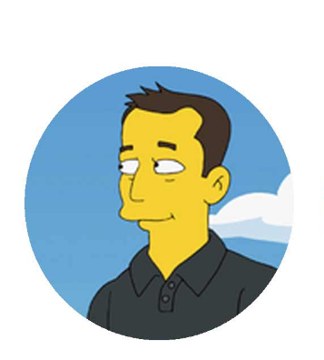

"Somos una librería especializada en cómics independiente y familiar desde 1999."
AnimeMuseum es el museo online de la libreria MuseumAk Cómics, un negocio familiar e independiente especializado en la venta de cómics, manga, literatura fantástica y derivados. Fundada el 11 de Septiembre de 1999 y regentada por la familia Marugán, actualmente
es una de las referencias dentro del sector de la venta al detalle de cómics (y derivados) de nuestro país. La página web que visitas arrancó en otoño de 1995, siendo pionera en el comercio electrónico español, de forma que la versión
que ahora usas, la tercera tras 25 años de existencia, se beneficia por una experiencia de uso y diseño acumulada única en el sector, de forma que en 2016 fue galardonada por los prestigiosos premios eCommerce Awards con la medalla de
bronce en la categoría "Mejor Webshop Social", quedando por delante de web corporativas como FNAC o Movistar.
AnimeMuseum pertenece al Gremio de Libreros de Madrid y a la asociación de libreros anglosajona ComicsPRO. Actualmente uno de los miembros de animeMuseum (Anthonny Troya) es vocal de la Junta Directiva del Gremio de Libreros de Madrid (desde otoño de
2015). (Desde el año 2014 hasta el 2020, animeMuseum perteneció a la asociación ZonaComic).
Desde principios del siglo XXI, AnimeMuseum dona anualmente una parte de sus beneficios a una lista de ONG's de primer nivel que va creciendo poco a poco siendo actualmente siete, incluídas Amnistía Internacional, Cáritas España o la Asociación
Española contra el Cáncer.
Nuestras Influencias

Elon Musk
Fundador de Tesla Motors o ProyectX, su visión del mundo combina la labor empresarial con la búsqueda de energías renovables y baratas para todo el mundo.
Steve Jobs
Fundador de Apple y creador del iPhone, siempre buscó la estética y la sencillez para llevar la tecnología al usuario final.
J.R.R. TOLKIEN
Escritor de "El Señor de Los Anillos", creó el mundo de La Tierra Media y con ello abrió las puertas a todo un género como es el de la literatura fantástica.
LEONARDO DA VINCI
Autor de La Gioconda, su aportación al Renacimiento y las Artes es tan perfecta como global, inspirando a artistas de generaciones venideras.